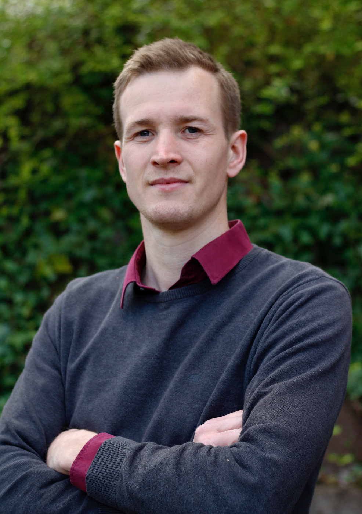

Sebastian Krantz
I am a PhD Student in Quantitative Economics at the Kiel Institute for the World Economy, where I am part of the Research Center International Development and the Kiel Institute Africa Initiative.
I conduct quantitative research on Africa's economic transformation using novel methods and data sources, focusing on Optimal Infrastructure Investments (spatial allocation problems), Regional and Global Value Chains, and Macroeconomic Stability and Resilience.
I am also an active open source contributor, developing high-performance statistical libraries for R and Julia.